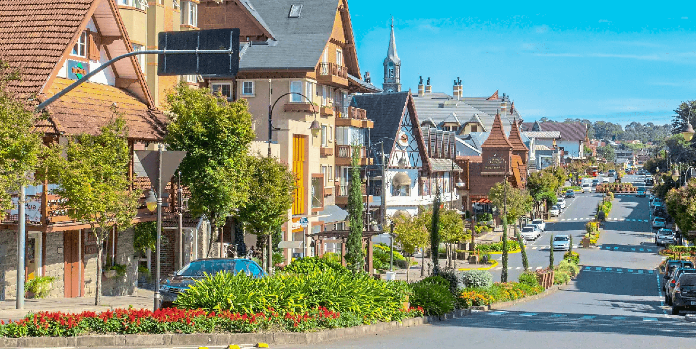
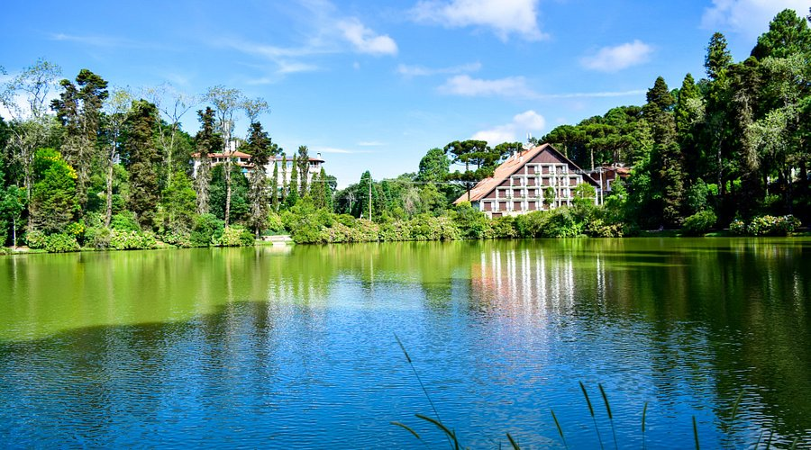
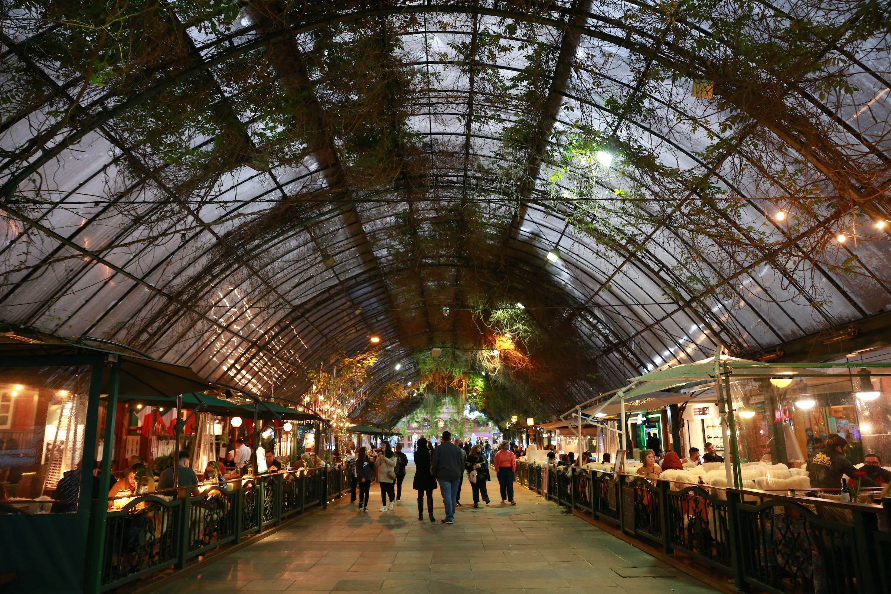
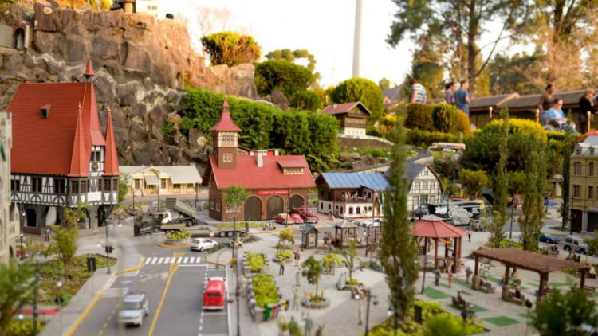

Gramado, o charme europeu no coração da Serra Gaúcha, encanta com suas ruas floridas, arquitetura acolhedora e uma atmosfera digna de conto de fadas. Entre chocolates artesanais irresistíveis e cafés coloniais de dar água na boca, a cidade combina tradição e sofisticação em cada esquina. Aqui, exploramos um dos destinos mais queridos do Brasil e descobrimos suas experiências gastronômicas e culturais que aquecem até os dias mais frios.
Descubra 3 destinos imperdíveis em Gramado
As atrações de Gramado vão desde parques temáticos encantadores e lagos tranquilos cercados por natureza até ruas charmosas com arquitetura de influência europeia. A cidade serrana oferece opções para todas as épocas do ano — famílias podem se divertir em museus interativos e espaços lúdicos, casais podem aproveitar o clima romântico e a gastronomia sofisticada, enquanto os amantes da natureza encontram trilhas, mirantes e paisagens perfeitas para relaxar. Os cenários bem cuidados, repletos de flores, luzes e detalhes arquitetônicos únicos, fazem de Gramado um destino especialmente atrativo para quem gosta de fotografia e experiências visuais marcantes.
-

Lago Negro
O Lago Negro é um dos cartões-postais mais famosos de Gramado, conhecido por suas águas escuras e tranquilas cercadas por árvores importadas da Europa, como pinheiros e hortênsias. O local é ideal para passeios relaxantes, especialmente de pedalinho, além de caminhadas ao redor do lago. Com uma atmosfera romântica e bem cuidada, é um ponto perfeito para fotos e momentos tranquilos em meio à natureza.
Bom para:
- Familia
- Casais
- Natureza
-

Rua Coberta
A Rua Coberta é o coração turístico da cidade, reunindo restaurantes, cafés e eventos culturais em um espaço charmoso e protegido por uma cobertura transparente. Ao longo do ano, recebe apresentações musicais, festivais e decorações temáticas, especialmente durante o Natal Luz. É o lugar ideal para experimentar a gastronomia local enquanto aproveita o movimento e a energia da cidade.
Bom para:
- Gastronomia
- Cultura
- Lazer
-

Mini Mundo
O Mini Mundo é um parque ao ar livre que apresenta réplicas em miniatura de construções famosas do mundo, com riqueza impressionante de detalhes. As maquetes são interativas e muitas contam com movimento, o que encanta tanto crianças quanto adultos. Além do aspecto educativo, o parque proporciona uma experiência lúdica única, permitindo “viajar pelo mundo” em poucas horas dentro de Gramado.
Bom para:
- Familia
- Entreterimento
- História
As melhores coisas para fazer em Gramado refletem o charme único da cidade como um dos destinos turísticos mais encantadores do Brasil. Conhecida por sua forte influência europeia, a cidade oferece uma atmosfera acolhedora e sofisticada, com experiências que vão da gastronomia típica aos eventos sazonais que transformam suas ruas ao longo do ano. Ao visitá-la, você encontra um equilíbrio entre cultura, lazer e natureza, em um ambiente que atrai visitantes de todas as idades.